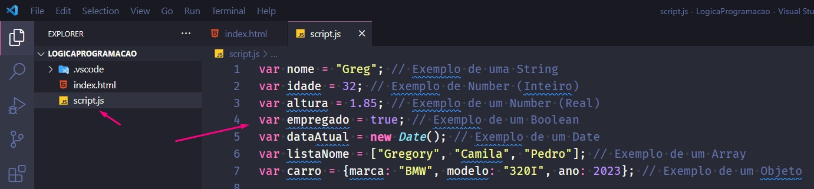
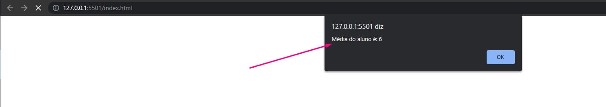
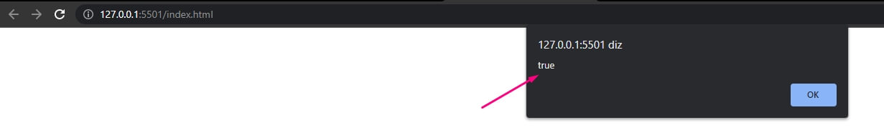

Lógica de Programação
Criado em: 02/05/2023
Lógica de programação é a técnica utilizada para definir a sequência de ações que um programa de computador deve seguir para realizar uma determinada tarefa. Ela envolve o uso de estruturas lógicas, como condicionais (if/else), laços de repetição (while/for/do while), e operadores lógicos, (AND/OR/NOT) para construir algoritmos que resolvem problemas computacionais.
Os passos que serão apresentados nesse módulo serão com base na linguagem javascript.
Realize o download do Visual Studio Code no site https://code.visualstudio.com/download:
Realize a instalação padrão.
Crie uma pasta vazia no diretório que melhor desejar e após abra o Visual Studio Code e realize os passos abaixo para abrir a pasta criada:

Selecione a pasta que você criou:
Crie um arquivo HTML conforme abaixo, insira o nome index.html:

Inseria a tag exclamação (!) e após selecione a primeira opção para criar a estrutura base do HTML:

Preencha a tag lang com valor “pt-br” e altere a tag title para o valor desejado:
Crie um arquivo javascript com nome script.js:
Inseria a tag script dentro do body conforme abaixo:

No arquivo script.js crie um alert conforme abaixo para teste se o script está funcional com HTML para ser validado nos próximos passos:
"Alert" é um método em javaScript que permite exibir uma mensagem na forma de uma caixa de diálogo ao usuário em um navegador da web.
No seu diretório criado no computador clique sobre o arquivo index.html e será aberto no seu navegador, se tudo estiver configurado corretamente conforme os passos orientados anteriormente deverá apresentar o alert criado conforme abaixo:
Uma variável é um espaço de memória nomeado que é usado para armazenar um valor em um programa de computador.
Principais variáveis que vamos utilizar durante as etapas são:
- String: Utilizada para armazenar texto.
- Number: Utilizada para armazenar números inteiros e reais.
- Boolean: Utilizada para armazenar um valor lógico de verdadeiro e falso.
- Array: Utilizada para criar e armazenar listas de dados.
- Object: Utilizada para criar e armazenar um objeto.
- Date: Utilizada para armazenar datas.
No arquivo script.js realize a declaração das variáveis de exemplo para fixação conforme abaixo:

Uma variável sempre inicia com a palavra var(variável global, pode ser acessada qualquer parte do código do javascript) ou let(variável de bloco, pode ser acessada apenas no bloco que foi declarada no javascript). Após vamos inserir o nome para variável, onde sempre precisa iniciar com um caractere e pode seguir os modelos de escrita Camel Case, Pascal Case e Snake Case, por fim inserir o valor para a variável.
Os modelos de escrita de variáveis:
- Camel Case - A primeira palavra começa com letra minúscula e a primeira letra de cada palavra subsequente é escrita em maiúscula, sem espaços ou outros separadores. Exemplo: var mediaAluno = 6.5
- Pascal Case - A primeira palavra começa com letra maiúscula e a primeira letra de cada palavra subsequente é escrita em maiúscula, sem espaços ou outros separadores. Exemplo: var MediaAluno = 5.3
- Snake Case - Todas as letras são minúsculas e as palavras são separadas por um sublinhado. Exemplo: var media_aluno = 3.2
Lembre-se de que a escolha do modelo de escrita deve ser consistente em todo o seu código, para garantir que seus identificadores sejam facilmente compreensíveis e legíveis para outros desenvolvedores que possam trabalhar no mesmo projeto.
Dentro do alert vamos inserir a crase ( ` ) para conseguir concatenar de maneira mais limpa nosso texto com nossas variáveis, onde as variáveis deve ser inserido com cifrão ( $ ) e inserido dentro de chaves ( { ):
Abra o seu arquivo index.html no seu navegador e será apresentandos os alerts das variáveis que criamos:
Nota: Foi criado o alert da variável data apenas para apresentar o dia, mês e ano. Assim utilizamos só parte da variável retirando horário e concatenando com a barra ( / ) para separar os dados. Exemplo: dataAtual.getDay() + "/" + dataAtual.getMonth() + "/" + dataAtual.getFullYear()
Os operadores aritméticos são usados em javaScript para realizar operações matemáticas em valores numéricos.
Exemplo de Soma:
Valor apresentado no alert (Página index.html no navegador):
Exemplo de Subtração:
Valor apresentado no alert (Página index.html no navegador):
Exemplo de Multiplicação:
Valor apresentado no alert (Página index.html no navegador):
Exemplo de Divisão:
Valor apresentado no alert (Página index.html no navegador):
Exemplo de Resto da divisão (Remainder - Módulo):
Valor apresentado no alert (Página index.html no navegador):
Exemplo de exponencial:
Valor apresentado no alert (Página index.html no navegador):
Exemplo de Incremento (Adiciona um ao seu operando):
Valor apresentado no alert (Página index.html no navegador):
Exemplo de Decremento (Subtrai um ao seu operando):
Valor apresentado no alert (Página index.html no navegador):
Exercício:
Leia 3 valores, no caso, variáveis nota1, nota2 e nota3, que são as três notas de um aluno. A seguir, calcule a média do aluno.
Valor apresentado no alert (Página index.html no navegador):

Para se aprofundar mais sobre operadores pode ser consultado o material oficial da Mozilla Developer Org: https://developer.mozilla.org/pt-BR/docs/Web/JavaScript/Guide/Expressions_and_Operators:
Os operadores de comparação são usados para comparar dois valores e determinar se eles são iguais, diferentes, maiores, menores, maiores ou iguais, ou menores ou iguais. Os operadores de comparação retornam um valor booleano (true ou false) que indica se a comparação é verdadeira ou falsa.
Exemplo do operador Igual:
Operador de igual valida se os dados são iguais, foi criado duas variáveis uma sendo número e outra sendo string contendo valores 10, retorno da expressão vai retornar verdadeiro.
Valor apresentado no alert (Página index.html no navegador)

Exemplo do operador Não igual:
Operador de não igual valida se os dados são diferentes, no caso as duas variáveis contém os valores 10, retorno da expressão vai retornar falso, se fosse valores diferentes retornaria true.
Valor apresentado no alert (Página index.html no navegador)
Exemplo do operador Estritamente igual:
Retorna verdadeiro caso os operandos sejam iguais e do mesmo tipo. No caso do exemplo irá retornar falso, pois o conteúdo é igual 10, porém o tipo é diferente um é string outro number.
Valor apresentado no alert (Página index.html no navegador)
Exemplo do operador Estritamente não igual:
Retorna verdadeiro caso os operandos não sejam iguais e/ou não sejam do mesmo tipo. No caso do exemplo irá retornar true, pois o conteúdo é igual 10, porém o tipo é diferente um é string outro number.
Valor apresentado no alert (Página index.html no navegador)
Exemplo do operador Maior que:
Retorna verdadeiro caso o operando da esquerda seja maior que o da direita. No caso do exemplo irá retornar false, pois o conteúdo é igual 10 e não maior ou menor.
Valor apresentado no alert (Página index.html no navegador)
Exemplo do operador Maior que ou igual:
Retorna verdadeiro caso o operando da esquerda seja maior ou igual ao da direita. No caso do exemplo irá retornar true, pois o conteúdo é igual 10.
Valor apresentado no alert (Página index.html no navegador)
Exemplo do operador Menor que:
Retorna verdadeiro caso o operando da esquerda seja menor que o da direita. No caso do exemplo irá retornar false, pois o conteúdo é igual 10 e não maior ou menor.
Valor apresentado no alert (Página index.html no navegador)
Exemplo do operador Menor que ou igual:
Retorna verdadeiro caso o operando da esquerda seja menor ou igual ao da direita. No caso do exemplo irá retornar true, pois o conteúdo é igual 10.
Valor apresentado no alert (Página index.html no navegador)
A estrutura condicional em javaScript é utilizada para controlar o fluxo do programa, permitindo a execução de um trecho de código apenas se uma determinada condição for satisfeita. A estrutura condicional básica em javaScript é o if, mas também existem outras como o else if, else, switch case e o operador ternário.
Tipos de condicionais:
- O if é usado para executar um bloco de código se a condição especificada for verdadeira. Se a condição for falsa, o bloco de código não será executado.
- O else if é usado para testar múltiplas condições. Se a primeira condição especificada for falsa, o bloco de código associado ao else if será executado se a condição especificada for verdadeira. É possível ter vários blocos else if em uma instrução if.
- O else é usado para executar um bloco de código se a condição especificada na instrução if for falsa.
- O switch case é usado para testar várias condições com uma única variável. É uma alternativa mais limpa para usar múltiplos blocos.
- O Ternário é uma forma concisa de escrever uma instrução if de uma única linha. Ele é composto por três partes: a condição, o valor retornado se a condição for verdadeira e o valor retornado se a condição for falsa.
Exemplo de if:
Valor apresentado no alert (Página index.html no navegador)
Exemplo de else if:
Valor apresentado no alert (Página index.html no navegador)
Exemplo de else:
Valor apresentado no alert (Página index.html no navegador)
Exemplo de switch case:
Nota: Neste exemplo, o bloco de código dentro do case correspondente ao valor da variável diaDaSemana será executado. Se nenhum case corresponder ao valor da variável, o bloco de código dentro do default será executado.
Valor apresentado no alert (Página index.html no navegador)

Exemplo de Ternário:
Neste exemplo, o operador ternário testa se a variável idade é maior ou igual a 18. Se for, a mensagem "Você é maior de idade." é atribuída à variável mensagem. Caso contrário, a mensagem "Você é menor de idade." é atribuída. A mensagem resultante é então exibida no console.
Valor apresentado no alert (Página index.html no navegador)
As estruturas de repetição em JavaScript permitem que um bloco de código seja executado várias vezes. Algumas estruturas de repetição disponíveis em javaScript são for, while e do-while.
Tipos de condicionais:
- O for é uma estrutura de repetição comum que é usada quando você sabe quantas vezes deseja executar o bloco de código.
- O while é uma estrutura de repetição que é usada quando você não sabe quantas vezes o bloco de código deve ser executado, mas sabe a condição de saída.
- O do-while é semelhante ao while, mas garante que o bloco de código seja executado pelo menos uma vez, mesmo se a condição for falsa.
Exemplo de for:
Neste exemplo, o bloco de código dentro do for será executado 10 vezes. A variável i é inicializada com 0 e incrementada a cada iteração. O bloco de código será executado enquanto i for menor que 10.
Exemplo de while:
Neste exemplo, o bloco de código dentro do while será executado até que i seja igual a 10. A variável i é inicializada com 0 e incrementada a cada iteração. O bloco de código será executado enquanto i for menor que 10.
Exemplo de do-while:
Neste exemplo, o bloco de código dentro do será executado pelo menos uma vez, pois a condição é verificada no final do loop. A variável i é inicializada com 0 e incrementada a cada iteração. O bloco de código será executado enquanto i for menor que 10.
A estrutura recursiva em javaScript é uma técnica de programação onde uma função chama a si mesma para resolver um problema. Essa técnica é muito utilizada em problemas que podem ser divididos em subproblemas menores, e que a solução de um subproblema depende da solução de outro subproblema.
Nota: Essa função recebe um número n como parâmetro e verifica se ele é igual a 0 ou 1. Se for, retorna 1, pois o fatorial de 0 ou 1 é 1. Caso contrário, a função chama a si mesma passando como parâmetro n - 1 e multiplica o resultado pelo valor de n. A chamada recursiva se repete até que n seja igual a 1, quando a função começa a retornar os valores e a multiplicação é realizada em cadeia até chegar ao valor final do fatorial.
Ao final, a função retorna o resultado da multiplicação em cadeia: 5 x 4 x 3 x 2 x 1 = 120, que é o fatorial de 5.
Em programação, as funções são usadas para agrupar um bloco de código que executa uma tarefa específica e pode ser reutilizado várias vezes no programa. Elas são muito úteis para evitar repetições de código e organizar a lógica do programa em partes menores e mais gerenciáveis.
Em javaScript, as funções podem ser definidas de duas maneiras: como função tradicional ou como arrow function.
Uma função tradicional é definida usando a palavra-chave function seguida pelo nome da função, lista de parâmetros (entre parênteses) e o corpo da função (entre chaves). Por exemplo, uma função tradicional que soma dois números pode ser definida assim:
Neste exemplo, a função soma recebe dois parâmetros a e b e retorna a soma dos dois.
Já a arrow function é uma forma mais concisa de definir funções em javaScript. Ela usa a sintaxe de uma seta (=>) para definir a função, sem precisar da palavra-chave function. A estrutura da arrow function é a seguinte:
Neste exemplo, a arrow function soma também recebe dois parâmetros a e b e retorna a soma dos dois.
Uma diferença importante entre as duas formas de definir funções é que, em arrow functions, o valor de this é definido no momento da criação da função, enquanto em funções tradicionais o valor de this é definido no momento da execução da função.
Outra diferença é que, se a função arrow tiver apenas uma expressão no corpo, é possível omitir as chaves e o return. Por exemplo, a função soma pode ser escrita como uma arrow function mais curta assim:
Neste caso, a função soma ainda recebe dois parâmetros a e b e retorna a soma dos dois, mas de uma forma mais concisa.
Uma lista é uma estrutura de dados que armazena um conjunto de valores, geralmente do mesmo tipo, sob um único nome. As listas são também chamadas de arrays e podem ser usadas para armazenar vários valores de um mesmo tipo em uma única variável.
As listas em JavaScript são indexadas, o que significa que cada elemento na lista é acessado por um índice numérico. O índice do primeiro elemento na lista é 0, o índice do segundo elemento é 1, e assim por diante.
Para criar uma lista em JavaScript, basta declarar uma variável e atribuir um conjunto de valores a ela, separados por vírgulas e entre colchetes []. Por exemplo:
Também é possível criar uma lista vazia e adicionar elementos a ela posteriormente, usando o método push(). Por exemplo:
Algumas operações comuns que podem ser realizadas em listas em javaScript incluem:
Acesso a elementos individuais por meio de seus índices:
Iteração sobre todos os elementos da lista, usando um loop for:
Objetos são uma estrutura de dados que permitem armazenar um conjunto de valores relacionados em uma única unidade. Um objeto é criado usando um par de chaves {} e pode conter um ou mais pares de chave-valor separados por vírgula. Cada valor é acessado por meio de uma chave específica.
Por exemplo, um objeto pessoa pode conter as informações de uma pessoa, como nome, idade, cidade, telefone e assim por diante. O objeto pessoa pode ser criado da seguinte forma:

Aqui o nome, idade, cidade e telefone são chaves e "João", 25, "São Paulo" e "(11) 99999-9999" são seus respectivos valores.
Os valores dentro de um objeto podem ser acessados usando a notação de ponto (.). Por exemplo, podemos acessar o valor da chave nome do objeto pessoa da seguinte forma:
Uma matriz é uma estrutura de dados que contém uma coleção de valores organizados em linhas e colunas. Uma matriz pode ser criada usando colchetes [] e separando cada elemento com uma vírgula. Por exemplo, a seguinte matriz contém 3 linhas e 3 colunas de números inteiros:
Neste exemplo, matriz é uma matriz 3x3 que contém os números de 1 a 9 organizados em 3 linhas e 3 colunas. Os elementos da matriz podem ser acessados usando a notação de colchetes [linha][coluna]. Por exemplo, para acessar o valor da segunda linha e terceira coluna, podemos escrever:
Nota: Lembrado que os índices iniciam sempre com zero, devido a isso a segunda linha sua referência é o índice 1 e a terceira coluna sua referência é o índice 2.
Guia de apoio javaScript - Mozilla Developer:
https://developer.mozilla.org/pt-BR/docs/Web/JavaScript
Guia de apoio javaScript - DOM - W3Schools:
https://www.w3schools.com/js/js_htmldom.asp
Portal para praticar exercícios de lógica de programação - Beecrowd:
https://www.beecrowd.com.br/judge/pt